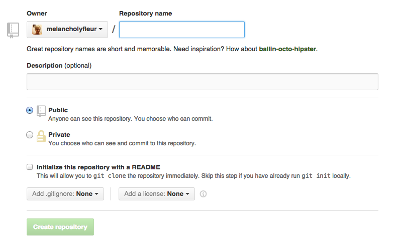
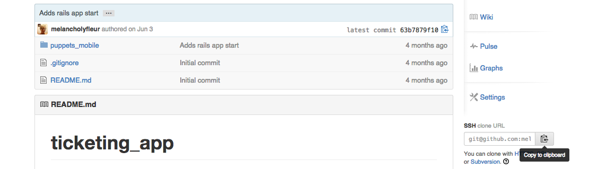

Download Class Materials
Intro to Version Control Using Git
Marylou Lenhart
Introductions

Please ask questions.
Goals for the class
- Basic understanding of what version control is
- Basic understanding of what git is and how to use it
- Knowledge of github and what it provides us
Version Control System
A tool that assists in the management of changes to documents.
What does that mean?
- You can make changes to documents and save those changes.
- You can undo changes
- You can include changes from other people*
- You can see multiple change-sets simultaneously*
Not just for programming
Anytime you are working on any set of documents that you are making changes to and want to save the state of, version control is extremely useful.
Git
A distributed version control system.
Distributed, in this case, basically means that we can have the same file existing in multiple locationsGitHub
A web service for programming projects that use Git.
Many Open Source projects hosted here
Collaboration
- Git makes collaboration easy
- GitHub makes collaboration even easier
- Easy to copy existing code, update, and share updates with others

Tool Check
GitHub
- If you haven't already create a GitHub account at github.com
- Login to your account
- (optional) Set your avatar at gravatar.com
- View your GitHub profile page:
http://github.com/your_username
Using Git in the CLI
Learning the Command Line Interface (CLI) for Git pays off in the long run.

Tool Check
Downloading Git
Tool Check
Open the Terminal
- On Mac: Applications > Terminal
- On Windows: Start Menu > All Programs > Git > Git Bash
Repository
Where our files live
Also referred to as a repo for short.Contains:
- A record of the changes made to those files
- Who made those changes
- When those changes were made
Activity
Our first repository
- Go into our Github account in the browser
Activity
Creating a new repository
- Create a new repository
Activity
Creating a new repository
Activity
Creating a new repository
Activity
Our first repository
- Go back to the terminal (Mac) or bash (Win)
- Type
git clone _paste_your_url_here_ - Press enter
- Go into the newly created directory by typing
cd _name_of_your_repo_
Commit
To save the state of a single or collection of changes.
How to make a commit with git
Whenever you make a change inside the folder where your repo is, git notices and will ask for a commit message in order to save the changes.
Commit Message
A note that describes what the commit is about.
Bad Commit Messages
- Whoops
- Fixed a thing
- I have no idea
- Everything works now
- I am so angry at the universe right now
Better Commit Messages
- Added the missing read-me file
- Fix: Extranous semi-colon removed
- Moved the cat-pix folder inside the images folder
- Resolved the problem where content would not display
- Added a hack in the CSS to fix the bug with IE
Things to keep in mind
- Avoid being vague
- Realize that not only are you communicating with future-you, but potientially others
- When you can, focus on why you did something not what you did
Activity
First commit
- Create a new file named "README.md" inside the directory you just created, and save it.
- Commit your changes:
Typegit add README.md
Typegit commit -m "Your Commit Message"
Make sure to provide a good description for your commit
And remember to put your commit message in quotes
Syncing
Also known as pushing in the command-line world
Takes the changes you made on your computer and sends them off to the GitHub website
Activity
Sync your changes
- Type
git push origin master - View the changes on GitHub:
https://github.com/[username]/[repo name]
A quick note on READMEs
README files are generally provided with software or other files that provides information for the person opening it.
They can contain:
- How to use a piece of software
- Who made the software
- Any bugs in a chunk of software
READMEs on GitHub
- Always will display on the main page on the repo
- Are important to those viewing the project so they can see what it is about and how to use it
- Supports the ability to make the content appear with styling using MarkDown
- Example: reveal.js README
MarkDown
An extremely lightweight markup language.
ReferenceMarkDown Example
# Title
* item 1
* item 2
* item 3
*italic text* __bold text__You Don't Have to Use MarkDown
Plain text will still display perfectly fine
Activity
Add some content to your README
- Open "README.md" in a text editor
- Add any content that you desire with or without MarkDown
- Commit your changes
Make sure to provide a good description for your commit - View your new README on the GitHub website
https://github.com/[username]/[repo name]
Commits don't need all files
We can tell git that we only want to commit changes to some files rather than all.
When do we want to only commit some files?
- If we don't want to save our changes in other files.
- If the other files are in some broken state.
- If the other files are still "works in progress".
How do we commit only files we want?
We only add the files we want!
Activity
Commit only one file
- Create "NewFile.md"
- Make some changes in "README.md"
- Add only "NewFile.md" and then commit.
- Then only this file will show up in the list of changes.
Branch
- Where your changes live.
- By default you start out in the master branch
- Difference branches are like parallel universes: they may be very different from one another or very similar and they exist at the same time.
Creating a new branch
When we create a new branch we keep all the old files as is, but are able to make changes that don't affect the master branch.
Why would we do this?
- Working on code we are unsure is correct.
(e.g. bug fixes) - Working on a completely new version of something.
- Working on a specific feature we want to add.
How do we create a new branch in Git?
How do we view a different branch on GitHub.com?
Activity
Creating a new branch
- Create a new branch named "song"
git co -b song- Add any song lyrics to your "README.md" file
- Commit your changes
- Push your changes
- View your README on the GitHub website
https://github.com/[username]/[repo name] note: it will still look the same - Change branches on the github website and now look at your README.md file.
Merging
When we take the changes of one branch and pull them into a second branch.
When do we want to merge?
- When we have tested our new bug fixes and want to use it.
- When we are ready to go live with new features.
- When we are ready to go live with a new version.
- When we want to combine two new features together.
How do we merge in Git
Activity
Merging a branch
- Merge the song branch into the master branch
- Type
git checkout master - Type
git merge song - Commit your changes
- View your README on the GitHub website
https://github.com/[username]/[repo name] note: it should now have your song lyrics
Rolling back commits
Sometimes you want to undo a commit, but still keep your changes.
How do we roll back in Git?
Reverting a commit
Sometimes you want to completely undo a commit.
How do we revert in Git?
Activity
Reverting some changes
- Open "README.md" and add "Changes I don't want" to it.
- Commit your changes.
- Find the hash for the commit you want to revert back to.
git log | head- Reset to that commit
git reset [hash for commit you want to revert to]
Further Learning
- Code School - Try Git (command-line based tutorial)
- Git's official documentation
- Git Immersion a git walkthrough from the command-line
- Deliberate Git a talk about writing good commits
THE END
Thank you!